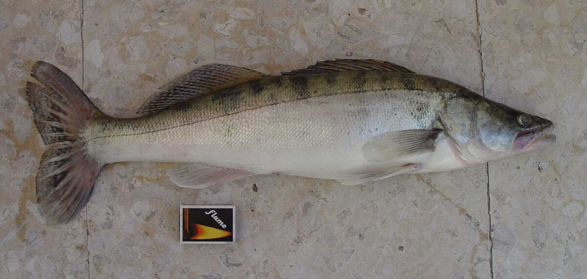

Najkrótsza odpowiedź
Opis sandacza ma pomóc odróżnić gatunek i ułożyć obserwację miejsca. Nie jest wskazaniem terminu połowu ani potwierdzeniem, że dany gatunek można w tym momencie łowić.
Plan obserwacji sandacza
| Sygnał miejsca | Co sprawdzić | Następny krok |
|---|---|---|
| Zmiana głębokości | Czy możesz bezpiecznie kontrolować kontakt z przynętą. | Obserwuj prowadzenie, nie tylko sam rzut. |
| Twardsze lub miękkie dno | Powtarzalność odczucia na krótkim odcinku. | Zmieniaj tempo pojedynczo. |
| Ryba przy brzegu | Miejsce do bezpiecznego odhaczenia. | Przygotuj wypuszczenie przed podjęciem ryby. |
Typowe błędy początkujących
- Traktowanie kalendarza lub opisu gatunku jako prognozy brań.
- Zaniedbanie aktualnej ochrony gatunku.
- Prowadzenie przynęty bez kontroli nad zaczepami i głębokością.
Checklist miejsca
Sprawdź stabilne i bezpieczne stanowisko.
Szukaj czytelnych przejść głębokości lub zmian dna, jeśli są widoczne lub wyczuwalne.
Notuj warunki oraz miejsce kontaktu zamiast zakładać stały schemat.
Jak korzystać z poradnika
Opis gatunku porządkuje obserwację, ale skuteczność i zasady zależą od warunków oraz aktualnych regulaminów.
Sprawdź źródło
Przed wyprawą sprawdź aktualny okres ochronny, warunki zezwolenia i lokalne ograniczenia dla wybranej wody.

Biologia i rozpoznawanie
Wygląd i rozpoznawanie
Sandacz (łac. Sander lucioperca) to drapieżna ryba z rodziny okoniowatych o wydłużonym, wrzecionowatym ciele i charakterystycznej, spiczastej głowie. Grzbiet ma zielonkawoszary lub oliwkowy, boki srebrzyste z ciemnymi, pionowymi pręgami, które u starszych osobników rozmywają się w plamy. Najbardziej rozpoznawalne cechy to dwie oddzielone od siebie płetwy grzbietowe — pierwsza z twardymi promieniami kolczastymi — oraz duże, szkliste, jakby „świecące" oczy, przystosowane do widzenia w słabym świetle. W pysku zwracają uwagę wyraźne kły (tzw. psie zęby), którymi przytrzymuje ofiarę. Początkujący mylą sandacza najczęściej z okoniem, ale okoń jest krępy, ma intensywniejsze pręgi i czerwone płetwy, podczas gdy sandacz jest smuklejszy i bardziej stonowany w barwach. W polskich łowiskach łowimy wyłącznie sandacza pospolitego — spokrewnione gatunki słonawowodne (jak sandacz wołżański z dorzecza Wołgi i Morza Kaspijskiego) nie występują w naszych wodach, więc w praktyce nie ma go z czym pomylić poza okoniem.
Środowisko i występowanie w Polsce
Sandacz preferuje wody duże, głębokie i raczej żyzne, o lekko zmąconej toni — w przeciwieństwie do szczupaka nie potrzebuje roślinności, lubi natomiast twarde, żwirowe lub kamieniste dno. W Polsce występuje powszechnie w nizinnych rzekach (Wisła, Odra, Warta, Bug i ich większe dopływy), w zbiornikach zaporowych (Zegrzyński, Włocławski, Sulejowski, Jeziorsko, Solina), w żyznych jeziorach oraz w Zalewie Wiślanym i Szczecińskim, gdzie tworzy bardzo silne populacje. Dobrze znosi wodę o ograniczonej przejrzystości, dlatego świetnie radzi sobie w zbiornikach eutroficznych, w których szczupak traci przewagę polowania z zasadzki. Typowe stanowiska to stoki głęboczków, krawędzie koryta rzeki, rynny, główki ostróg, rejony przy betonowych budowlach hydrotechnicznych oraz zatopione drzewa. Sandacz unika silnie zarośniętych płycizn i bardzo zimnych, bystrych wód górskich.

Biologia i tarło
Sandacz dojrzewa płciowo zwykle w wieku 3–5 lat, przy długości około 35–45 cm. Tarło odbywa się wiosną, najczęściej od kwietnia do końca maja, gdy woda osiąga około 10–15°C. Samiec przygotowuje gniazdo na twardym dnie — oczyszcza korzenie, żwir lub zatopione gałęzie — a po złożeniu ikry przez samicę aktywnie pilnuje gniazda i natlenia ikrę ruchami płetw, agresywnie odganiając intruzów. Ta opieka nad potomstwem to rzadkość wśród naszych ryb drapieżnych i jednocześnie powód, dla którego ochrona sandacza w okresie tarła ma tak duże znaczenie: wyciągnięcie samca z gniazda praktycznie skazuje ikrę na zjedzenie przez okonie i jazgarze. Sandacz rośnie stosunkowo szybko w żyznych wodach — w dobrych warunkach po 6–8 latach może przekraczać 60–70 cm. Dożywa kilkunastu, a wyjątkowo ponad dwudziestu lat.
Żerowanie wiosną i latem
Wiosną, przed tarłem i tuż po nim, sandacze przebywają stosunkowo płytko, w pobliżu tarlisk, jednak w Polsce ten okres w większości wód przypada na czas ochronny, więc wędkarsko interesujący staje się dopiero czerwiec. Po otwarciu sezonu ryby intensywnie odbudowują kondycję i żerują regularnie, często w cyklu zmierzchowo-nocnym, podchodząc na stoki i płycizny przylegające do głębin. Latem, przy wysokiej temperaturze wody, sandacz w dzień stoi głęboko lub w cieniu konstrukcji i zwalonych drzew, a żeruje głównie nocą, czasem na zaskakująco płytkiej wodzie — przy plażach, na blatach i wypłyceniach, gdzie nocą gromadzi się drobnica. Ciepłe, parne noce oraz okresy po letnich burzach bywają okresami wzmożonej aktywności, choć żadna reguła nie działa zawsze. W rzekach latem warto obserwować rejony z przyspieszonym nurtem i natlenioną wodą.
Żerowanie jesienią i zimą
Jesień to klasyczny sezon sandaczowy. Wraz z ochładzaniem się wody ryby schodzą głębiej, grupują się w większe stada i podążają za ławicami uklei, płoci i stynki. Wrzesień i październik to często żerowanie w półwodzie i przy stokach, listopad — coraz bliżej dna i głębokich rynien. Zimą sandacz nie zapada w letarg: żeruje krócej i wolniej, ale regularnie, zwykle w najgłębszych partiach łowiska, w dołach rzecznych i przy zimowiskach białej ryby. W tym okresie liczy się bardzo wolna, precyzyjna prezentacja przynęty tuż przy dnie i cierpliwość, bo okna żerowania bywają krótkie — czasem to kwadrans w ciągu całego dnia. Warto pamiętać, że zimowe brania są delikatne i łatwe do przeoczenia, a o wyniku częściej decyduje znalezienie ryb niż dobór przynęty.
Przepisy, metody i taktyka
Przepisy krajowe i zasady lokalne
Przepisy krajowe: Wody śródlądowe: wymiar 45 cm; okres ochronny 1 marca–31 maja. Źródło: Dz.U. 2023 poz. 1373, § 6–7
Granica okresu ochronnego: jeżeli pierwszy lub ostatni dzień okresu przypada w dzień ustawowo wolny od pracy, okres skraca się o ten dzień (§ 7 ust. 2); wyjątkiem jest całoroczna ochrona jesiotra.
Przed połowem: sprawdź aktualny regulamin i zezwolenie dla konkretnej wody. Wymiar, okres, limit lub zakaz lokalny może być ostrzejszy; brak wartości krajowej nie oznacza zgody na zabranie ryby.

Metody i przynęty
Podstawową metodą połowu sandacza jest spinning z miękkimi przynętami: ripperami i twisterami w rozmiarach zwykle 7–13 cm, uzbrojonymi w główki jigowe dobrane do głębokości i siły uciągu. Sprawdzają się też gumy na uzbrojeniach przelotowych, cykady i pilkery zimą oraz wąskie woblery typu minnow nocą, prowadzone płytko i bardzo wolno. Kolorystyka to temat dyskusyjny — w mętnej wodzie częściej wybiera się barwy jaskrawe lub kontrastowe, w czystej naturalne, choć doświadczenie z konkretnego łowiska bywa ważniejsze niż każda teoria. Drugą skuteczną drogą są metody z przynętą naturalną: martwa rybka na zestawie drgającej szczytówki lub klasycznej gruntówce, a tam, gdzie regulamin na to pozwala, żywiec. Zestaw powinien być stosunkowo delikatny, ale z mocnym, ostrym hakiem — sandacz ma twardy, kostny pysk i słabe zacięcie kończy się pustym holem.
Taktyka łowienia
W łowieniu sandacza najwięcej daje systematyczne opukiwanie struktury dna. Na rzece warto skupić się na końcówkach i główkach ostróg, rynnach między nimi, krawędziach nurtu oraz wypłaceniach sąsiadujących z dołami; na zbiornikach — na stokach, garbach i starych korytach. Klasyczne prowadzenie to opad kontrolowany: przynęta skacze po dnie, a brania przychodzą najczęściej w fazie opadania, sygnalizowane delikatnym puknięciem lub wybiciem plecionki. Kluczowy jest stały kontakt z przynętą i natychmiastowe, zdecydowane zacięcie. Nocą taktyka się odwraca: łowimy płytko, woblerem lub lekko uzbrojoną gumą, prowadzonymi jednostajnie i wolno, często równolegle do brzegu. Sandacz jest rybą stadną — złowienie jednej sztuki to sygnał, by dokładnie obłowić to samo miejsce. I odwrotnie: brak brań po kilkudziesięciu rzutach zwykle oznacza, że ryb tam po prostu nie ma i lepiej zmienić stanowisko niż przynętę.
Rekordy Polski — orientacyjnie
Rejestry rekordów wędkarskich notują sandacze o długości około metra i więcej — historyczne wyniki krajowe to ryby w okolicach 100–110 cm i wadze rzędu kilkunastu kilogramów, przy czym dane z różnych lat i różnych klasyfikacji nie zawsze są spójne, więc traktujmy je orientacyjnie. W praktyce wędkarskiej sandacz powyżej 70 cm to już bardzo dobra ryba, a osobniki ponad 90 cm są rzadkością i zazwyczaj pochodzą z dużych rzek, zbiorników zaporowych lub zalewów przymorskich. Warto pamiętać, że największe samice to najcenniejsze tarlaki — wiele osób decyduje się wypuszczać ryby wyraźnie ponadwymiarowe, nawet jeśli regulamin nie nakazuje tego wprost.
Wartość kulinarna i zasady postępowania
Sandacz jest uznawany za jedną z najsmaczniejszych ryb słodkowodnych Europy — jego białe, zwarte mięso ma delikatny smak i bardzo mało ości, dzięki czemu od wieków trafia do kuchni restauracyjnej. Jeśli decydujemy się zabrać rybę w ramach limitu, należy ją humanitarnie uśmiercić niezwłocznie po złowieniu i przechowywać w chłodzie. Jednocześnie coraz więcej wędkarzy stosuje selektywne podejście: zabiera pojedyncze ryby „kulinarne" średniego rozmiaru, a duże wypuszcza. Przy zamiarze wypuszczenia kluczowa jest szybkość — sandacz źle znosi długie przetrzymywanie, szczególnie w ciepłej wodzie, a ryby wyciągane z dużych głębokości mogą cierpieć na skutki dekompresji. Mokre dłonie lub mata, minimalny czas na powietrzu i odhaczanie w wodzie znacząco zwiększają szanse ryby na przeżycie.

Ciekawostki
Oko sandacza zawiera warstwę odblaskową (tapetum lucidum), tę samą strukturę, która sprawia, że oczy kota „świecą" w nocy — to ona daje sandaczowi przewagę podczas polowania o zmierzchu i tłumaczy, czemu w słoneczne południe ryba zwykle stoi biernie w głębinie. Sandacz bywa nazywany przez wędkarzy „kompanem" lub „szklakiem" właśnie od szklistych oczu. Co ciekawe, mimo groźnych kłów sandacz połyka ofiary stosunkowo wąskie — jego gardziel jest znacznie ciaśniejsza niż u szczupaka, dlatego poluje głównie na smukłe ryby, takie jak ukleja czy stynka, i dlatego smukłe przynęty często sprawdzają się lepiej niż wysokie. Gatunek został też introdukowany w wielu krajach Europy Zachodniej, gdzie w niektórych wodach uznawany jest za inwazyjny — to przestroga, jak ostrożnie należy traktować przenoszenie ryb między zlewniami.
FAQ — najczęstsze pytania
Czy sandacza łowi się tylko nocą?
Nie, choć noc i zmierzch to statystycznie najpewniejsze pory, zwłaszcza latem i na płytkich łowiskach. Jesienią i zimą sandacz regularnie żeruje także w ciągu dnia, szczególnie przy pochmurnej pogodzie i w głębszej, przymulonej wodzie. W praktyce pora dnia jest tylko jednym z czynników — równie ważne są głębokość, struktura dna i obecność ryb karmowych, a żadna pora nie gwarantuje brań.
Czym różni się branie sandacza od brania szczupaka?
Sandacz najczęściej bierze delikatnie: krótkie puknięcie, przytrzymanie lub lekkie wybicie linki na opadzie przynęty, podczas gdy szczupak zwykle uderza wyraźnie i agresywnie. Dlatego przy sandaczu tak ważna jest czuła plecionka, sztywniejsza wędka i błyskawiczne zacięcie. Wielu wędkarzy zacina „z marszu" każde podejrzane zachowanie zestawu — przy twardym pysku sandacza to często jedyna droga do skutecznego wbicia haka.
Czy przy sandaczu potrzebny jest przypon stalowy?
Sandacz nie przecina żyłki zębami tak jak szczupak, więc teoretycznie wystarczy gruby fluorocarbon. Problem w tym, że w większości polskich łowisk sandaczowych żyją także szczupaki i to one rozstrzygają sprawę: tam, gdzie ich obecność jest realna, uczciwiej wobec ryb jest stosować cienki przypon stalowy lub twardy materiał przyponowy odporny na zęby. Utrata przynęty to drobiazg — gorzej, gdy szczupak odpływa z kotwicą w pysku.
Jaka jest dobra wielkość przynęty na sandacza?
Najbardziej uniwersalny zakres to gumy 7–13 cm, choć jesienią duże sandacze potrafią atakować przynęty 15 cm i większe, a zimą bywa odwrotnie — decydują małe, wolno prowadzone przynęty. Ważniejsza od długości jest często smukłość sylwetki i praca na opadzie. Warto mieć przy sobie kilka rozmiarów i ciężarów główek, bo dopasowanie tempa opadania do nastroju ryb daje zwykle więcej niż zmiana koloru.
Źródła i weryfikacja
Powyższe treści mają charakter przeglądowy i edukacyjny. Podane wymiary, okresy ochronne i limity opierają się na ogólnych zasadach PZW według stanu na dzień publikacji i mogą się różnić w poszczególnych okręgach oraz na wodach specjalnych — przed każdym połowem zweryfikuj je w aktualnym zezwoleniu, regulaminie właściwego okręgu oraz na stronie pzw.org.pl. FishPoint nie gwarantuje żadnych wyników połowu; skuteczność opisanych metod zależy od łowiska, warunków i doświadczenia wędkarza. Zobacz też: kalendarz brań sandacza — kiedy bierze najlepiej.
Tożsamość biologiczna i źródła
Nazwa łacińska: Sander lucioperca. Grupa atlasu: drapieżniki. Alias: zander.
Źródła: FishBase: Sander luciopercaGBIF: Sander luciopercaIUCN Red List: Sander lucioperca. Dostęp: 2026-07-17. Zakres: tożsamość taksonomiczna i nazewnictwo oraz, gdy wskazano, ocena ochrony; bez potwierdzenia lokalnego występowania, stanu łowiska ani zasad połowu.
Porównanie taksonomiczne
Porównaj z kartą Okoń pospolity. Obie karty prowadzą do osobnych rekordów źródłowych; porównanie nie jest kluczem oznaczania w terenie ani gwarancją wyniku połowu.